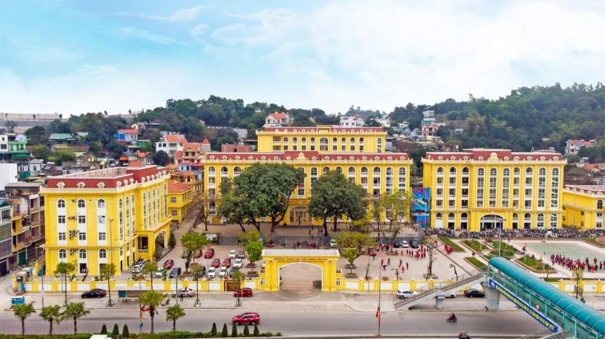

- Sinh ngày 25/02/2007, chòm sao Song Ngư♓️
- Sinh ra và lớn lên ở thành phố Hạ Long, tỉnh Quảng Ninh
- Là một trong 64 tỉnh thành của nước Việt Nam và là 1 trong những tỉnh thành đẹp nhất nước ta. Nơi đây có không chỉ có phong cảnh rực rỡ nét màu thiên nhiên, mà còn chứa theo phong phú các loại khoáng sản. Đặc biệt Hạ Long còn là tâm điểm du lịch nổi bật của nước ta với muôn vàn cảnh sắc núi biển và rất nhiều những trung tâm giải trí và vui chơi.
- Hiện tại học lớp 12B1 tại Trường THPT Hòn Gai một trong những ngôi trường chất lượng cao tại thành phố Hạ Long.
- Thích vẽ tranh, trang điểm, đi chơi với bạn bè
- Thích ăn nướng, thích đồ ăn vặt có vị mặn cay hoặc có vị ngọt
- Thích uống hồng trà kem của hãng đồ uống Mixue
- rapper Wxrdie
- rapper Tlinh